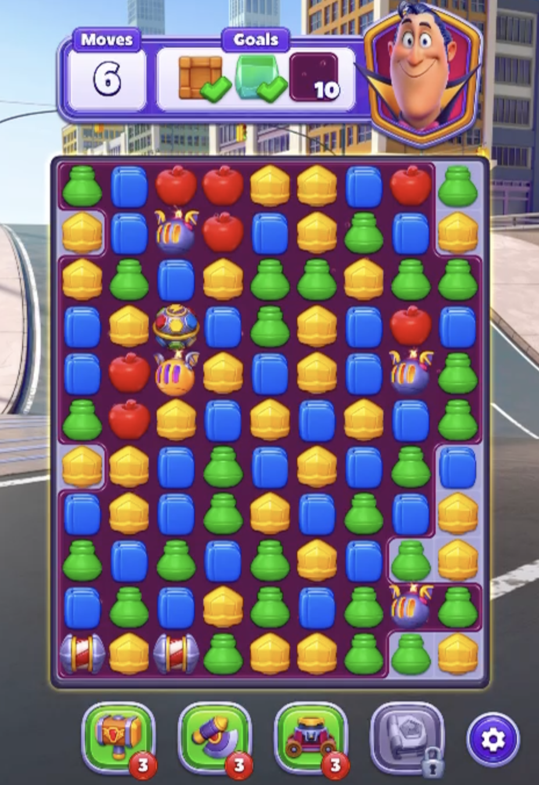

Step 1: Adaptive Threshold (the starting point)
Local brightness thresholding — captures every game piece outline cleanly. This is what we feed into contour detection.

Step 2: Contours on Threshold
Contours found and classified directly from the threshold map. Cyan = circles, magenta = rounded rects, red = other polygons.

Step 3: Shapes on Original
Same detections drawn over the original image. 142 shapes identified — every game piece gets highlighted.

Original (for comparison)
The raw input image with no annotations.
